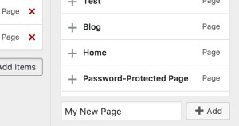
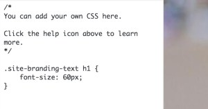
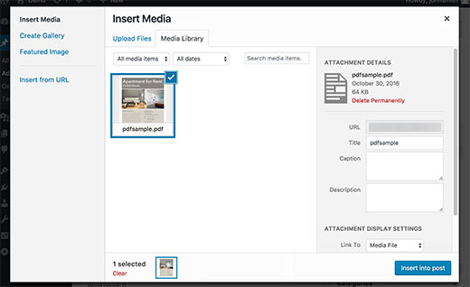
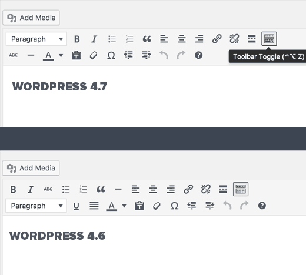
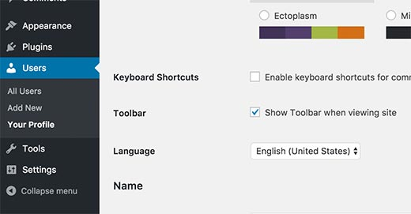

WordPress 4.7
Le novitá
Daniele Scasciafratte / @Mte90Net
Source: make.wordpress.org/core/2016/12/05/wordpress-4-7-field-guide/, www.wpbeginner.com/news/whats-coming-in-wordpress-4-7-features-and-screenshots/
Daniele Scasciafratte
- Co Founder/CTO Codeat
- Open Source Addicted
- Mozillian & Mozilla Reps
- WordPress Core Contributor/Developer
- Project Translation Editor in WordPress Italia
- Industria Italiana Software Libero Vice Presidente
WordPress 4.7 Vaughan
482 contributor, con 205 per la prima volta
Theme Starter Content
Customizer - Edit Shortcut
Customizer - Menu Building
Customizer - Custom CSS
PDF thumbnails
Editor Enhancements
Lingua della Dashboard per utente
REST API Content Endpoints
Endpoints per Articoli, Commenti, Termini, Utenti, meta e Impostazioni.Add a post type in the Rest API
add_action( 'init', 'my_book_cpt' );
function my_book_cpt() {
$args = array(
'show_in_rest' => true,
/** 'rest_base' => 'books',
'rest_controller_class' => 'WP_REST_Posts_Controller' **/
);
register_post_type( 'book', $args );
Add an existing post type in the Rest API
add_action( 'init', 'my_custom_post_type_rest_support', 25 );
function my_custom_post_type_rest_support() {
global $wp_post_types;
$post_type_name = 'book';
if( isset( $wp_post_types[ $post_type_name ] ) ) {
$wp_post_types[$post_type_name]->show_in_rest = true;
$wp_post_types[$post_type_name]->rest_base = $post_type_name;
$wp_post_types[$post_type_name]->rest_controller_class = 'WP_REST_Posts_Controller';
}
}
Add custom field to the Rest API
add_action( 'rest_api_init', 'slug_register_book' );
function slug_register_starship() {
register_rest_field( 'post',
'book',
array(
'get_callback' => 'slug_get_meta',
'update_callback' => 'slug_update_book',
'schema' => null,
)
);
}
function slug_get_book( $object, $field_name, $request ) {
return get_post_meta( $object[ 'id' ], $field_name );
}
function slug_update_book( $value, $object, $field_name ) {
if ( ! $value || ! is_string( $value ) ) {
return;
}
return update_post_meta( $object->ID, $field_name, strip_tags( $value ) );
}
Add a custom endpoint
add_action( 'rest_api_init', function () {
register_rest_route( 'myplugin/v1', '/author/(?P< id>\d+)', array(
'methods' => 'GET',
'callback' => 'get_last_post_title_of_author',
) );
} );
function get_last_post_title_of_author( $data ) {
$posts = get_posts( array(
'author' => $data['id'],
) );
if ( empty( $posts ) ) {
return null;
}
return $posts[0]->post_title;
}
Azioni di massa per gli sviluppatori

Post Type Templates
<?php
/*
Template Name: Full-width layout
Template Post Type: post, page, product
*/
Migliorie interne
- get_theme_file_uri() Cerca il file prima nel child e poi nel genitore
- WP_Hook - $wp_filter ora è un array di oggetti
- WP_TaxonomyHook - $wp_taxonomies ora è un array di oggetti
- wp_list_sort() Ordina gli oggetti o array per diversi valori
- wp_doing_ajax() No DOING_AJAX
- pre_do_shortcode_tag Filtro per cambiare gli shortcode
- smilies/smilies_src Per aggiungere nuovi smilies es: :LOGO:
- Accesso automatico dopo l'installazione
Siamo su Trello